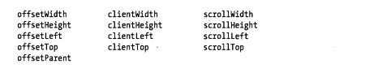

- 15.8文档和元素的几何形状和滚动
- 浏览器在窗口中渲染文档时,它创建文档的一个视觉表现层,在那里每个元素有自己的位置和尺寸.
- web应用程序可以将文档看做时元素的树,并且不用关心在屏幕上这些元素是如何渲染的
- 浏览器窗口中完成文档的布局以后,怎么样菜能在抽象的基于树的文档模型与几何形状的基于坐标的视图之间来回变换
- 15.8.1文档坐标和视口坐标
- 元素的位置是以像素度量的,向右代表X坐标的增加,向下代表Y坐标的增加.
- 有两个不同的点作为坐标系的原点:元素的X和Y坐标可以相对于文档的左上角或者相对于在其中显示文档的视口左上角.
- '视口'只是实际显示文档内容的浏览器的一部分:它不包括浏览器'外壳'(如菜单,工具条和标签页),针对框架页中显示的文档,视口是定义了框架页iframe元素.无论在何种情况下,当讨论元素位置时,必须弄清楚所使用的坐标是文档坐标还是视口坐标(视口坐标也叫窗口坐标)
- 如果文档比视口要小,或者说它还未出现滚动,则文档的左上角就是视口的左上角,文档和视口坐标系统是同一个
- 两种坐标系之间互相转换,必须加上或减去滚动的偏移量(scroll offset)
- 文档坐标比视口坐标更加基础,并且在用户滚动时它们不会发生变化
- 当使用css指定元素的位置时运用来了文档坐标
- 为了在坐标系之间互相转换,我们需要判定浏览器窗口的滚动条位置.window对象的pageXOffset和pageYOffset属性在所有的浏览器中提供这些值,除了IE8及更早的版本以外.IE也可以通过scrollLEFT和scrollTop属性来获得滚动条的位置
- 正常情况下通过查询文档的根节点(document.documentElement)来获取这些属性值,但在怪异模式下，必须在文档的body元素(document.body)上查询它们
- 15.8.2查询元素的几何尺寸
- 判定一个元素的尺寸和位置的最简单的方法是调用它的getBoundingClientRect()方法
- left和top属性表示元素的左上角的X和Y坐标,right和bottom属性表示元素的右下角的X和Y坐标
- 为了转化为甚至用户滚动浏览器窗口以后仍然有效的文档坐标,需要加上滚动的偏移量
- getBoundingClientRect()返回的对象还包含width和height属性,但是在原始的IE中未实现
- 元素内容被一块可选的空白区域包围叫做内边距.内边距被边距包围,边框被外边距所包围
- getBoundingClientRect()所返回的坐标包含元素的边距和内边距,但不包含元素的外包边距
- 浏览器在布局时块状元素(图片,段落和div元素等)总是矩形,内联元素可能跨了多行,因此可能由多个矩形形成,内联元素上调用getBoundingClientRect()它返回边界矩形.
- 查询内联元素每个独立矩形调用getClientRects()方法来获得一个只读的类数组对象,它的每个元素类似于getBoundingClientRect()返回矩形对象
- getBoundingClientRect()和getClientRect()所返回的矩形对象,并不是实时的,它们只是调用方法文档视觉状态的静态快照,在用户滚动或改变浏览器窗口大小时不会更新它们
- 15.8.3判定元素在某点
- getBoundingClientRect()方法使我们能在视口中判定元素的位置
- document对象的elementFromPoint方法来判定.传递X和Y坐标,该方法返回在指定位置的一个元素
- 如果指定的点在视口以外,elementFromPoint()返回null,即使该点在转换为文档坐标后是完美有效的,返回值也是一样
- elementFromPoint方法看上去很有用,典型的案例是将鼠标指针的坐标传递给它来判定鼠标在哪个元素上
- 15.8.4滚动
- scrollLeft和scrollTop属性可以用来设置让浏览器滚动,但有一种更简单的方法从javascript最早的时期开始就支持的。window对象的scrollTop方法接受一个点的X和Y坐标,并作为滚动条的偏移量设置它们,窗口滚动到指定的点出现在视口的左上角
- window的scrollBy方法和scroll和scrollTo类似,但是它的参数是相地的,并在当前滚动条的偏移量上增加.
- getBoundingClientRect()计算元素的位置,并转换为文档坐标,然后用scrollTo方法达到目的
- 如果只传递false作为参数,它将试图将元素的下边缘放在或尽量接近视口的下边缘
- 15.8.2关于元素尺寸,位置和溢出的更多信息
- getBoundingClientRect()方法在所有当前的浏览器上都有定义,但如果需要支持老式浏览器,不能依靠此方法而必须使用更老的技术来判断元素的尺寸和位置
- HTML元素拥有offsetLeft和offsetTop属性返回元素的X和Y坐标。对于很多元素,这些值是文档坐标,并直接指定元素的位置
- offsetParent属性指定这些属性所相对的父元素,如果offsetParent为null,这些属性都是文档坐标
- 循环offsetParent对象链来累加偏移量,该函数计算指定元素的文档坐标

- 内容区域是视口,就像浏览器的窗口,当实际内容比视口更大时,需要把元素的滚动条位置考虑进去
- clientWidth和clientHeight类似offsetWidth和offsetHeight不同的是他们不包含边框带下,只包含内容和它的内边距
- 浏览器在内边距和边距之间添加了滚动条,clientWidth和clientHeight在其返回值中也不包含滚动条
- 内联元素,clientWidth和clientHeight总是返回0
- 在文档的根元素上查询这些属性时,他们返回值和窗口的innerWidth和innerHeight属性值相等
- 它们返回元素的内边距的外边缘和它的边框的外边缘之间水平距离和垂直距离,通常这些值就等于左边和上边的边框宽度
- 元素有滚动条,并且浏览器将这些滚动条放置在左侧或顶部,clientLeft和clientTop也就包含了滚动条的宽度。对于内联元素,clientLeft和clientTop总是为0
- scrollWidth和scrollHeight是元素的内容区域加上它的内边距再加上任何溢出内容的尺寸.当内容正好和内容区域匹配而没有溢出时,这些属性与clientWidth和clientHeight是相等的,但当溢出时它们就包含溢出的内容,返回值比clientWidth和clientHeight要大
- 当文档包含可滚动的且有溢出内容的元素时,getElementPosition方法就不能正常工作了.因为它没有把滚动条考虑进去
- 不支持getBoundingClientRect()的浏览器在元素位置方面有很多不兼容性,像这样如此简陋无法可靠地工作